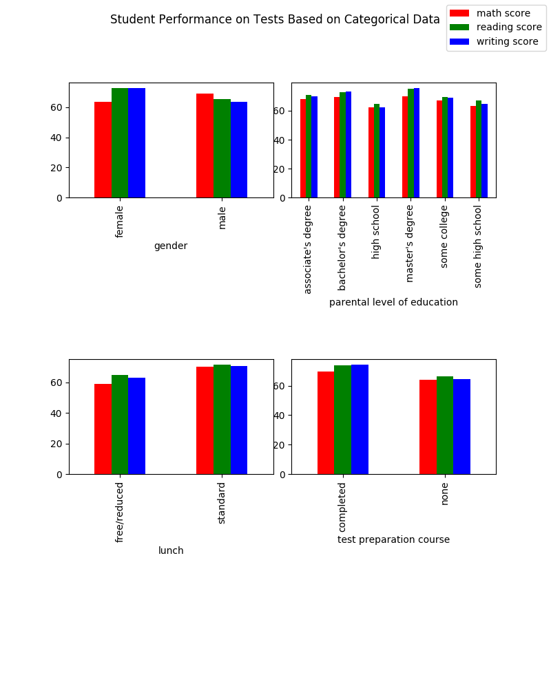
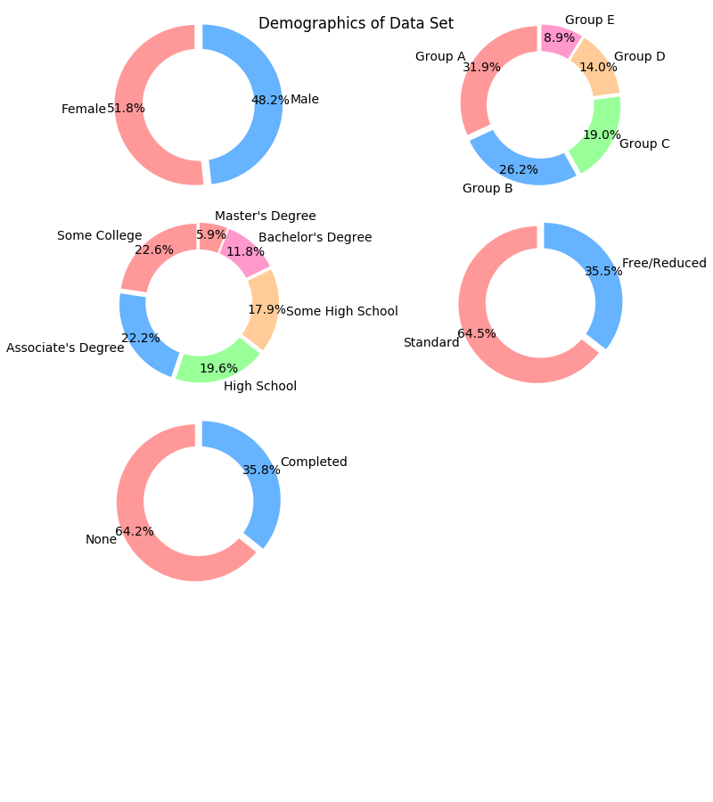
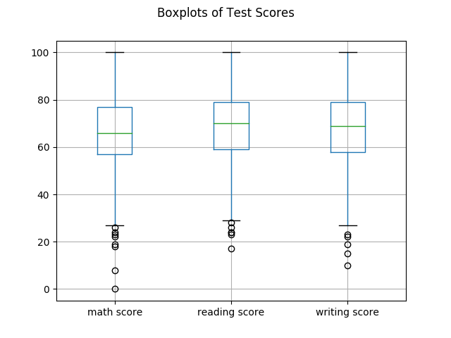
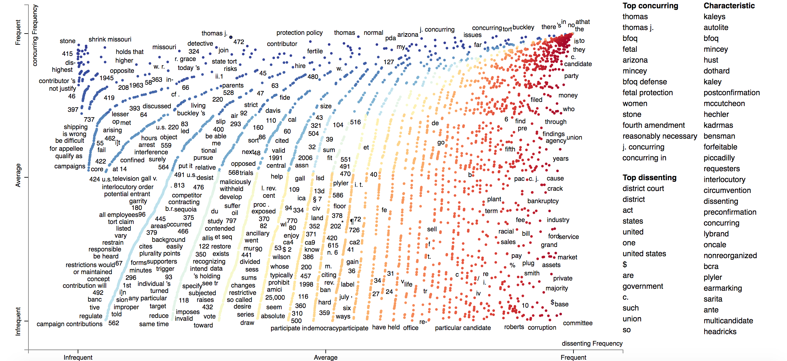
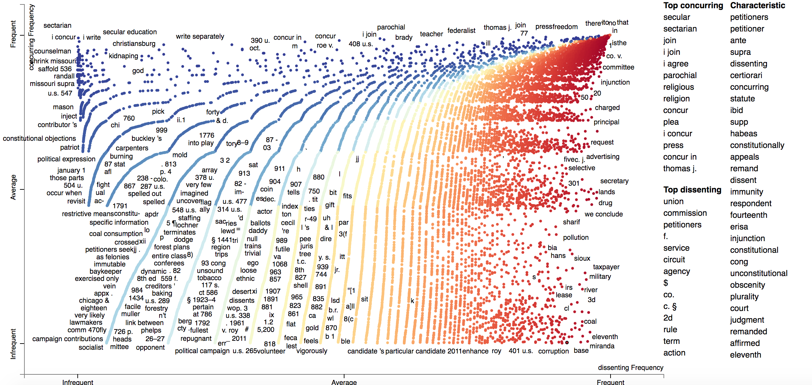

Design Challenge 8: Data Visualization
Use p5.js visualize a data set that is of interest to you.
Data Visualization of Three Datasets
Misssing Migrants

Student Performance of Test Scores



Supreme Court Opinions

Explore this dataset

Explore this dataset